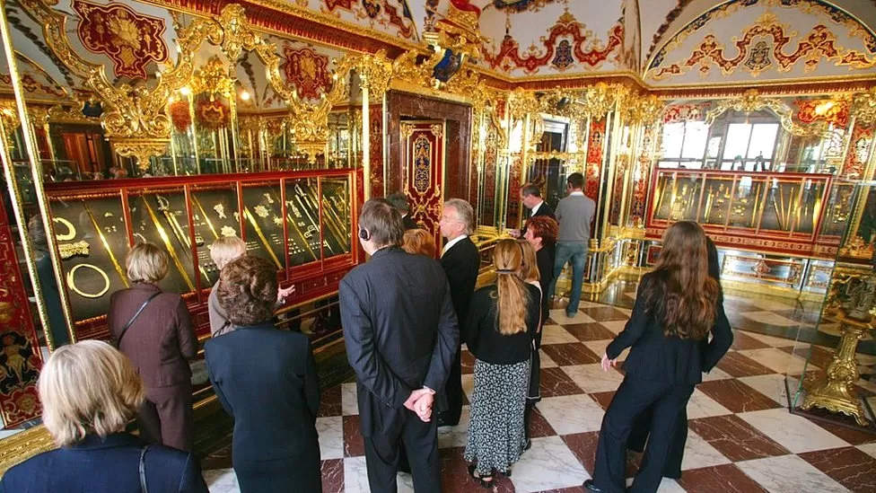

The thieves stole precious items worth €113m (£98m) from the city's state museum in 2019.
Police recovered many of the jewels, including a diamond encrusted sword, but it is feared the rest of the looted treasure may never be found.
The men, all members of a notorious criminal family network, face sentences of four to six years.
This was a meticulously planned heist. The gang, who lived in Berlin, visited the site several times and prepared their entry point in advance, using a hydraulic cutting machine to saw through the bars of a protective window covering before taping them back into place.
Then, in the early hours of the morning of 25 November 2019, they set fire to a circuit breaker panel near the museum, plunging the surrounding streets into darkness while two of the men slipped inside.
Initially there were fears that, like the golden coin, the treasure was lost forever.
But many of the stolen items were returned to the museum after three of the men confessed to the theft and agreed to divulge the location of the loot in return for lighter sentences as part of a deal with prosecutors.
Nevertheless, several pieces are still missing, including a very rare diamond called the White Stone of Saxony.
The items were part of a treasure trove collected in the 18th Century by Augustus the Strong, the Elector of Saxony. He not only amassed pieces covered in diamonds and precious stones but designed the Green Vault in which to display them.
The audacity of the heist shocked the art world. But the break-in also raised questions about the adequacy of the museum's security measures
Even one of the thieves expressed surprise during the trial that they had been able to saw through window bars apparently without detection, despite the noise generated by their cutting equipment.
Prof Ackermann, who emphasised that responsibility for the security concept at the museum was shared between Dresden's State Art Collection and another regional body, insisted that the security system was one of the best in Germany.
But, she added, "many aspects come together in a security system. The building, the organisation, and also technical aspects. And, like in a chain, every aspect must work and, in this case, many things didn't work."